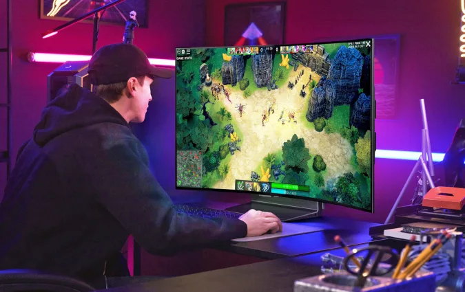

You can manually adjust the display, which has 20 levels of curvature to to choose from.
A few days ago, Corsair introduced a 45-inch display called Xeneon Flex with a panel made by LG that you can bend to switch between a flat and a curved screen. Turns out LG also developed a bendable monitor model of its own. The Korean company has just unveiled the LG OLED Flex or LX3, a 42-inch screen that you can manually adjust until it reaches a curvature of 900R. To note, Corsair's has a max curvature of 800R, and a smaller number means the monitor's curve is more pronounced. You can quickly adjust the Flex's curvature by using a dedicated button on its remote control and choosing either of the two available presents. But you can also manually adjust its degree of curvature in five percent increments, giving you over 20 levels of curve to to choose from. Further, you can tilt the monitor towards or away from you and adjust the height of its stand by 140 millimeters. LX3 uses the company's backlight-free and self-lit OLED technology and was designed to have a 0.1 millisecond response time and low input lag. It also gives you the power to adjust the size of the image onscreen so you can choose to use the whole monitor or just a part of it, if you want to see the whole picture at a glance — say for games that need you to be aware of your environment. A gamer plays a game on the LG OLED Flex monitor in a room accented with pink and purple light. LG A few days ago, Corsair introduced a 45-inch display called Xeneon Flex with a panel made by LG that you can bend to switch between a flat and a curved screen. Turns out LG also developed a bendable monitor model of its own. The Korean company has just unveiled the LG OLED Flex or LX3, a 42-inch screen that you can manually adjust until it reaches a curvature of 900R. To note, Corsair's has a max curvature of 800R, and a smaller number means the monitor's curve is more pronounced. You can quickly adjust the Flex's curvature by using a dedicated button on its remote control and choosing either of the two available presents. But you can also manually adjust its degree of curvature in five percent increments, giving you over 20 levels of curve to to choose from. Further, you can tilt the monitor towards or away from you and adjust the height of its stand by 140 millimeters. LX3 uses the company's backlight-free and self-lit OLED technology and was designed to have a 0.1 millisecond response time and low input lag. It also gives you the power to adjust the size of the image onscreen so you can choose to use the whole monitor or just a part of it, if you want to see the whole picture at a glance — say for games that need you to be aware of your environment. Turn on browser notifications to receive breaking news alerts from Engadget You can disable notifications at any time in your settings menu. Not nowTurn on LG also gave the monitor exclusive access to its new Game app, which has shortcuts to popular gaming-related apps like Twitch and YouTube and lists all your connected external input devices. Speaking of connected devices, the model's Switching Hub function lets you easily switch device connection between your PC and the monitor. You can use the monitor's built-in mic and anything connected to its USB ports, including headsets and keyboards, and then press a button to use the devices connected to the PC instead. Other features include two front-firing 40W speakers, support for Dolby Atmos and support for Dolby Vision gaming. LG has yet to announce pricing or relate date for the model, but it will showcase the OLED Flex at IFA 2022 in Berlin.